1020D14 FRONT CRANK SHAFT OIL SEAL COVER - R + R AND REPLACE SEALS FOR VERSIONS WITH OIL PUMP ON CRANK SHAFT, TIMING SIDE
- Path
- Procedures > 10 ENGINE UNIT > 1020 CRANKCASE SUMP AND COVERS > 1020D OIL SEALS ON CRANK SHAFT > 1020D14 FRONT CRANK SHAFT OIL SEAL COVER - R + R AND REPLACE SEALS FOR VERSIONS WITH OIL PUMP ON CRANK SHAFT, TIMING SIDE
- Kind
- repair procedure (removal / refitting; the operation number is the code)
- Applies to
- engines: 1.9 JTD 16V; all production periods
- Interactive page
- https://sloeber94.github.io/elrnDB-aGt/en/#/125000923
Applies to: engines: 1.9 JTD 16V; all production periods
 Removing
Removing
 Refitting
RefittingRemove the car from the ramps.
Ensure that the ignition key is in the OFF position, then disconnect the negative battery terminal (-).
Name | Connector | |
|---|---|---|
- | Battery | See A1B BATTERY ( BATTERY NEGATIVE ) |
Proceed with removal
Op. 1008C10 POWER UNIT UPPER REACTION LINK R R.
Proceed with removal
Op. 1060G80 DS ELECTRIC INJECTION CONTROL UNIT - R R.
Proceed with removal
Op. 4450B04 RIGHT FRONT WHEEL R R.
Proceed with removal
Op. 7055B54 UNDER-ENGINE GUARD - R R.
Proceed with removal
Op. 7055B91 RIGHT FRONT WHEEL ARCH LINER - R.R..
Proceed with removal
Op. 1092G10 SINGLE ENGINE BELT R R.
Proceed with removal
Op. 1092A10 CRANKSHAFT SERVICES PULLEY - R.R..
Proceed with removal
Op. 1092G20 ENGINE COMPONENT SINGLE BELT FIXED TENSIONER - ONE - R + R.
Proceed with removal
Op. 1032D12 TIMING SYSTEM PROTECTIVE COVER(S) - R + R.
Proceed with removal
Op. 1032B10 TOOTHED TIMING BELT - R + R FOR TIMING ADJUSTMENT OR REPLACEMENT.
Proceed with removal
Op. 1032B44 TOOTHED DRIVE PULLEY - R + R WITH TIMING BELT REMOVED.
Proceed with removal
Op. 1084A16 OIL DIP STICK PIPE - R R.
Proceed with removal
Op. 1020A20 CRANK CASE OIL SUMP - R + R CLEAN SEALS FOR SEALANT APPLICATION.
1. Undo the bolt (1a) and remove the fixed timing belt tensioner (1b).
2. Undo the bolts (2a) and move the engine cooling reservoir (2b) sideways.
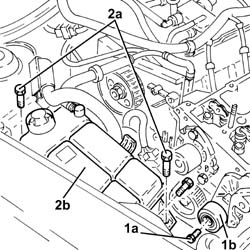
Applies to: engines: 1.9 JTD 16V; all production periods
1. Fit a suitable engine mounting bracket (1a) using the bolt (1b) fixing the pressure pump support to the camshaft housing.
2. Fit the tool (2a), complete with mountings (2b) and support the power unit attaching the rod (2c) for the tool to the bracket fitted previously.
 | Name | Country |
|---|---|---|
2a | Crossmember | 1.820.581.000 |
| Name | Country |
|---|---|---|
2b | Support mountings | 1.870.650.000 |
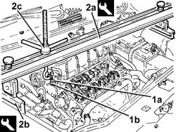
Applies to: engines: 1.9 JTD 16V; all production periods
1. Undo the bolt (1a) and remove the single drive belt tensioner (1b).
2. Undo the bolts (2a) and remove the power assisted steering pump drive pulley (2b).
3. Undo the bolts (3a) and move the power assisted steering pump (3b) backwards in relation to the support.
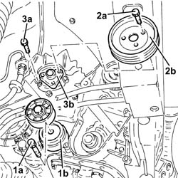
Applies to: engines: 1.9 JTD 16V; all production periods
1. Undo the bolt (1a) and disconnect the cooling radiator engine oil supply pipe (1b), engine oil filter mounting side.
2. Undo the bolt (2a) and disconnect the cooling radiator engine oil return pipe (2b), engine oil filter mounting side.
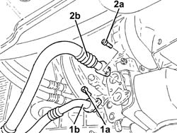
Applies to: engines: 1.9 JTD 16V; all production periods
1. Using a suitable tool, undo and remove the engine oil filter cartridge.
2. Undo the connector (2a) and remove the engine oil filter mounting (2b) with thermostatic valve incorporated.
Remove the gasket.
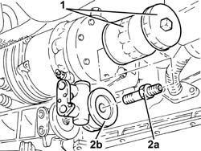
Applies to: engines: 1.9 JTD 16V; all production periods
Position a hydraulic jack under the engine.
1. Undo the bolt securing timing side rigid engine support to the flexible mounting.
2. Undo the bolts (2a) and remove the timing side rigid engine support (2b).
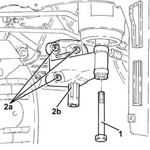
Applies to: engines: 1.9 JTD 16V; all production periods
1. Unscrew the bolts (1a) and remove the support (1b) complete with mobile timing belt tensioner (1c).
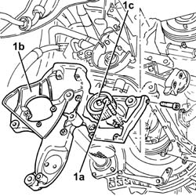
Applies to: engines: 1.9 JTD 16V; all production periods
1. Undo the bolts (1a) and remove the crankshaft front cover (1b) complete with oil seal (1c) and intake (1d).
Keep the gasket.
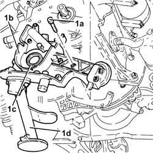
Applies to: engines: 1.9 JTD 16V; all production periods
Refitting
RemovingPlace the gasket back in its housing.
1. Place the crankshaft front cover (1a) complete with oil seal (1b) and intake (1c) back in its housing and secure it tightening the bolts (1d) to the recommended torque.
 | Fastening | Component | Ø | Value (daNm) |
|---|---|---|---|---|
1d | Bolt | CRANKSHAFT FRONT COVER | M6 | (Engine crankcase side) 0.8 - 1.0 |
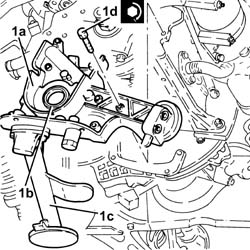
Applies to: engines: 1.9 JTD 16V; all production periods
1. Place the support (1a), complete with timing moving tensioner (1b), back in its housing and secure it using the bolts (1c).
| Fastening | Component | Ø | Value (daNm) |
|---|---|---|---|---|
1c | Bolt | POWER STEERING PUMP SUPPORT/BRACKET | M8 | (Engine crankcase side) 2.3 ÷ 2.8 |
| Fastening | Component | Ø | Value (daNm) |
|---|---|---|---|---|
1c | Bolt | POWER STEERING PUMP SUPPORT/BRACKET | M10 | (Crankcase side) 4.5 ÷ 5.5 |
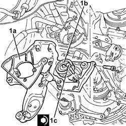
Applies to: engines: 1.9 JTD 16V; all production periods
1. Refit the timing side rigid engine support (1a)and secure it tightening the bolts (1b) to the recommended torque.
| Fastening | Component | Ø | Value (daNm) |
|---|---|---|---|---|
1b | Bolt | ENGINE MOUNT TIMING SIDE | M10 | (Crankcase side) 4.5 ÷ 5.5 |
2. Tighten the bolt securing timing side rigid engine support to the flexible mounting to the recommended torque.
| Fastening | Component | Ø | Value (daNm) |
|---|---|---|---|---|
2 | Bolt | ENGINE MOUNT TIMING SIDE | M12 | Flexible mounting side 79 97 |
Remove the hydraulic jack from under the engine.
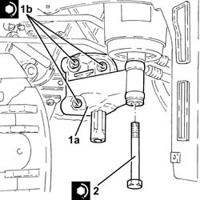
Applies to: engines: 1.9 JTD 16V; all production periods
1. Place the engine oil filter (1a) complete with gasket back in its housing and fasten it tightening the connector (1b) to the recommended torque.
| Fastening | Component | Ø | Value (daNm) |
|---|---|---|---|---|
1b | - | - | - | - |
2. Lubricate the gasket with engine oil and fit the engine oil filter, tightening fully by hand.
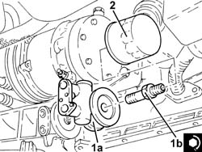
Applies to: engines: 1.9 JTD 16V; all production periods
Connect the engine oil return pipe from the cooling radiator, engine oil filter mounting side, and tighten the bolt.
Connect the engine oil supply pipe to the cooling radiator, engine oil filter mounting side, and tighten the bolt.
1. Refit the power steering pump (1a) in its seating and tighten its bolts (1b) to the specified torque.
| Fastening | Component | Ø | Value (daNm) |
|---|---|---|---|---|
1b | Bolt | POWER STEERING PUMP | M8 | (Support side) 2.3 ÷ 2.8 |
2. Place the power assisted steering pump drive pulley (2a) back in its housing and secure it by tightening the bolts (2b) to the recommended torque.
| Fastening | Component | Ø | Value (daNm) |
|---|---|---|---|---|
2b | Bolt | POWER STEERING PUMP DRIVE PULLEY | M8 | (Power assisted steering pump side) 2.3 ÷ 2.8 |
3. Place the engine components single drive belt moving tensioner (3a) back in its housing and fix it tightening the bolt (3b) to the recommended torque.
| Fastening | Component | Ø | Value (daNm) |
|---|---|---|---|---|
3b | Bolt | SINGLE SERVICES MOBILE BELT TENSIONER | M8 | 2.3 ÷ 2.8 |
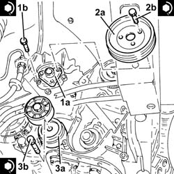
Applies to: engines: 1.9 JTD 16V; all production periods
Remove the safety tools used for supporting the power unit.
| Name | Country |
|---|---|---|
- | Crossmember | 1.820.851.000 |
| Name | Country |
|---|---|---|
- | Support mountings | 1.870.650.000 |
Refit the coolant reservoir in its seating and secure with its bolts.
Fit the fixed timing belt tensioner and secure by tightening the bolt to the recommended torque.
| Fastening | Component | Ø | Value (daNm) |
|---|---|---|---|---|
- | Bolt | FIXED TENSIONER | M10 | 4.5 ÷ 5.5 |
Proceed with refitting
Op. 1020A20 CRANK CASE OIL SUMP - R + R CLEAN SEALS FOR SEALANT APPLICATION.
Proceed with refitting
Op. 1084A16 OIL DIP STICK PIPE - R R.
Proceed with refitting
Op. 1032B44 TOOTHED DRIVE PULLEY - R + R WITH TIMING BELT REMOVED.
Proceed with refitting
Op. 1032B10 TOOTHED TIMING BELT - R + R FOR TIMING ADJUSTMENT OR REPLACEMENT.
Proceed with refitting
Op. 1032D12 TIMING SYSTEM PROTECTIVE COVER(S) - R + R.
Proceed with refitting
Op. 1092G20 ENGINE COMPONENT SINGLE BELT FIXED TENSIONER - ONE - R + R.
Proceed with refitting
Op. 1092A10 CRANKSHAFT SERVICES PULLEY - R.R..
Proceed with refitting
Op. 1092G10 SINGLE ENGINE BELT R R.
Proceed with refitting
Op. 7055B91 RIGHT FRONT WHEEL ARCH LINER - R.R..
Proceed with refitting
Op. 7055B54 UNDER-ENGINE GUARD - R R.
Proceed with refitting
Op. 4450B04 RIGHT FRONT WHEEL R R.
Proceed with refitting
Op. 1060G80 DS ELECTRIC INJECTION CONTROL UNIT - R R.
Proceed with refitting
Op. 1008C10 POWER UNIT UPPER REACTION LINK R R.
Connect the negative (-) battery terminal.
Refill the engine oil lubrication system
Op. 0010T11 ENGINE OIL CHECK LEVEL AND TOP UP.
Remove the car from the ramps.
Topics linked from this page (14)
- 0010T11 ENGINE OIL CHECK LEVEL AND TOP UP
- 1008C10 POWER UNIT UPPER REACTION LINK R R
- 1020A20 CRANK CASE OIL SUMP - R + R CLEAN SEALS FOR SEALANT APPLICATION
- 1032B10 TOOTHED TIMING BELT - R + R FOR TIMING ADJUSTMENT OR REPLACEMENT
- 1032B44 TOOTHED DRIVE PULLEY - R + R WITH TIMING BELT REMOVED
- 1032D12 TIMING SYSTEM PROTECTIVE COVER(S) - R + R
- 1060G80 DS ELECTRIC INJECTION CONTROL UNIT - R R
- 1084A16 OIL DIP STICK PIPE - R R
- 1092A10 CRANKSHAFT SERVICES PULLEY - R.R.
- 1092G10 SINGLE ENGINE BELT R R
- 1092G20 ENGINE COMPONENT SINGLE BELT FIXED TENSIONER - ONE - R + R
- 4450B04 RIGHT FRONT WHEEL R R
- 7055B54 UNDER-ENGINE GUARD - R R
- 7055B91 RIGHT FRONT WHEEL ARCH LINER - R.R.